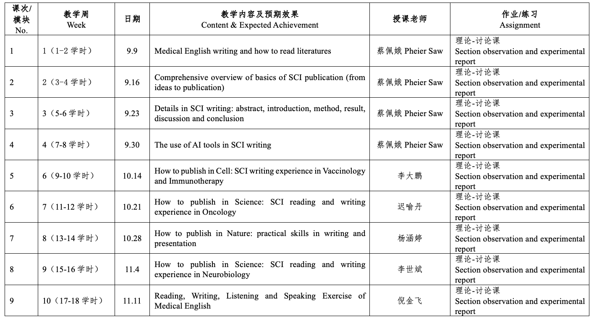

2025秋 · MED40008.01 · 蔡佩娥、李大鹏、迟喻丹、杨涵婷、李世斌、倪金飞
来源：复旦教务系统教学大纲，本轮使用已授权账号下载。原始正文与考核信息；去除联系方式和网页脚本，内嵌图片按原字节去重保存。
本课程面向医学及生命科学相关专业研究生，旨在系统提升学生的医学专业英语素养，帮助掌握英文文献的阅读策略与科研论文的规范写作方法。课程通过线上线下结合授课，涵盖语法逻辑、写作结构、经典文献剖析及顶刊投稿经验分享，突出实用性与前沿性，强化学生科研表达能力与批判性思维训练。
This course is tailored for graduate students in medicine and life sciences, aiming to systematically strengthen their command of medical English for academic purposes. It focuses on enhancing students’ ability to read cutting-edge literature, understand research logic, and write scientifically in a clear and structured manner. The course adopts a blended teaching model: online lectures delivered by experienced English educators emphasize essential grammar, academic sentence patterns, and writing strategies, while offline sessions led by faculty and invited experts focus on interpreting high-impact papers, sharing journal submission experiences, and guiding students in research writing. Through targeted reading, writing practice, and interactive discussion, the course encourages critical thinking, fosters effective scientific communication, and equips students with practical skills for future academic work.
本课程旨在贯彻“立德树人”的根本任务，围绕医学及生命科学领域的研究生人才培养目标，提升学生的专业英语应用能力与科研表达素养。通过系统传授医学英语的语法结构、写作逻辑与文献解读方法，帮助学生掌握规范、清晰、逻辑严谨的学术表达技巧。课程注重价值引领与能力培养，结合高水平论文写作与阅读训练，强化学生的批判性思维与国际学术视野，提升其在科研交流、成果发表与跨文化沟通中的综合竞争力，为未来从事高水平医学研究和国际合作打下坚实基础。
本课程采取“线上线下结合、理论与实践并重”的混合教学模式，结合多元教学策略以实现知识传授与能力培养的统一。课程第一阶段由具备丰富医学英语教学经验的外聘专家在线授课，采用PPT录播与实时互动相结合的方式，系统讲解写作逻辑与语言规范；第二阶段由本校教师组织线下小班研讨，聚焦英文论文精读、写作实训与思维训练，结合实例指导学生构建科研写作思路。课程注重学生参与，融入分组讨论、作业反馈与案例分析，提升学习成效与批判表达能力。
本课程共设9次课，覆盖18学时，分为理论授课与专题研讨两大模块。前四周由英语母语的外籍资深英语教师系统讲授SCI论文写作基础，包括文献阅读、结构逻辑、语言规范及AI工具辅助写作等内容；中后期邀请多位具有海外科研背景的校内外专家，围绕Vaccinology、Oncology、Neurobiology、Molecular Biology等领域，分享在《Cell》《Science》《Nature》等顶刊的写作与投稿经验。课程最后以综合性的听说读写训练收尾，提升学生整体科研英语应用能力。每次课均结合“理论-讨论课”形式，部分课程配套练习作业，强化学习实效。

Eric H. Glendinning et al，《新版剑桥实用专业英语：医学英语》，商务印书馆，2020
白永权、张宏清，《医学专业英语阅读一分册+二分册》，人民卫生出版社，2022
白永权，《医学专业英语听说分册》，人民卫生出版社，2022
王燕等，《生物医学期刊英文论文写作教程》，重庆大学出版社，2020
| 项目 | 比例 | 评定说明 |
|---|---|---|
| 出勤Attendance | 10.0% | 按时上课 Attend classes on time |
| 课堂表现Participation | 10.0% | 积极与老师互动 Actively participate in discussions |
| 作业/实验/实践Assignment | 30.0% | 认真、准确完成文献阅读、积极参与文献讨论 Complete reading and writing tasks carefully |
| 课题论文Research Paper | 50.0% | 完成报告 Submit a clear, structured paper or summery |